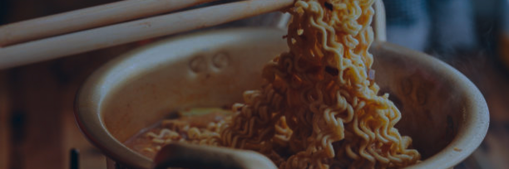
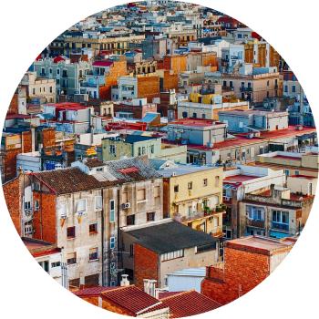
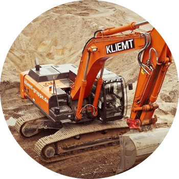

home > 창업안내 > 개설절차
개설절차

- 틈새는 손님들의 추억과
사랑으로 만들어진 곳 - 처음 간판도 없이 단골들만 찾아올 수 있었던 그곳에 손님들이 머리를 맞대고 궁리한 끝에 만들어낸 이름이 ‘틈새’였다. 가계의 좁은 벽을 빽빽하게 채운 낙서들도 모두 손님들이 두고간 추억의 시간들이다.
-
- 틈새브랜드 파워
- 수많은 방송보도에 의해 검증된 라면의 원조로서 자리잡고 있으며, 일본, 중국등의 관광안내에도 빠질 수 없는 관광코스로 소개
-
- 흉내낼 수 없는 맛
- 틈새라면이 개발한 스프로 흉내낼 수 없는 맛이 기존 라면과는 철저하게 차별화 될 수 있습니다.
-
- SYSTEM
- 가족형 프랜차이즈(마진율의 극대화) 소자본 창업(시설 투자 비용 최저) 빠른 소비 회전율, 현금화 율
- 01 개설절차
- 전화, 인터넷 등을 이용한 기본 상담 방문상담, 가맹점 견학
- 02 계약체결
- 계약서작성, 지역상권보호
- 03 입지 및 상권조사
- 투자금액 대비 최적 상권 및 입지 컨설팅을 통한 점포개발 적격여부 판정, 전반적인 OUTLET구축
- 04 점포설계 및 시설공사
- 점포실측 및 내부 규정에 따른 인테리어 감리 및 설계, 본사 MANUAL에 따른 점포 착공 점주 여수실시 및 위생교육 및 사업자 등록 등 개업전 전반사항 실시
- 05 개점준비
- 주방기기 입고 및 설치 완료 확인 매장운영교육지도 OPEN을 위한 최종 점검
- 06 OPEN
- 투자금액 대비 최적 상권 및 입지 컨설팅을 통한 점포개발 적격여부 판정, 전반적인 OUTLET구축
- 07 운영 및 관리
- 매출 분석 및 영업지도 실시 1년간의 책임보수기간(단, 계약규정에 따름) 지속적인 언론 홍보 지원
가맹점 개설 조건
-

- 가능지역
- 읍 단위 이상 지역 시가지 핵심 상권 및 상가 밀집지역 역세권 및 사무실 주변, 학원가
-

- 점포면적
- 8평 이상 가능(실평수)
-
- 점포 예정지 기본시설 파악
- 가스 : 도시가스 및 LPG 가스 설치 가능한 점포 수도 : 15mm 주름관 / 배수 : 50mmPVC